critical role catch-all!
caduceus clay
This project was my first incorporation of body paint into a costume, as well as the utilization of Photoshop to edit photographs. The costume had relatively little handmade crafting, though I pride myself on upcycling thrifted garments and minimizing consumption of new resources to make costumes. This costume was submitted to - and featured in - the Critical Role April 2021 Cosplay Gallery.

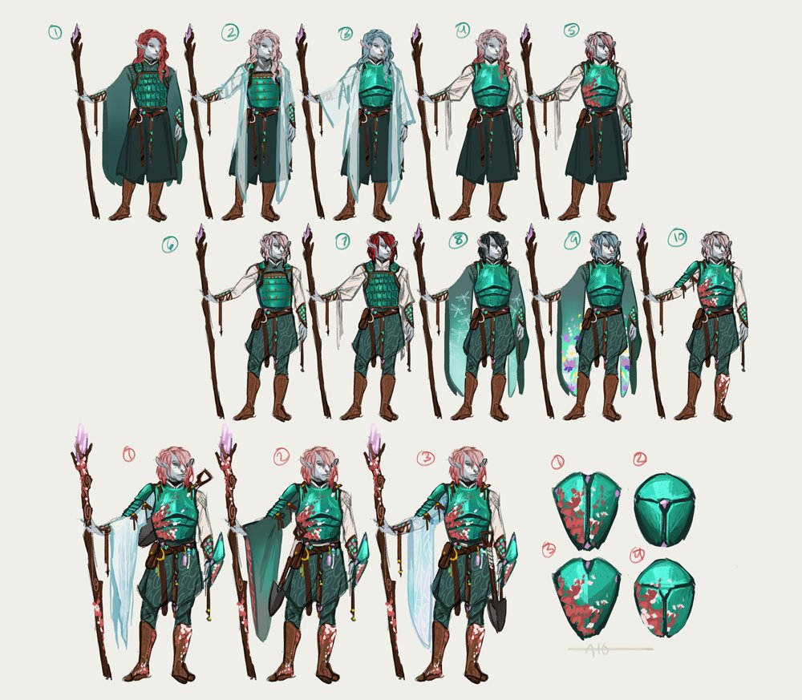
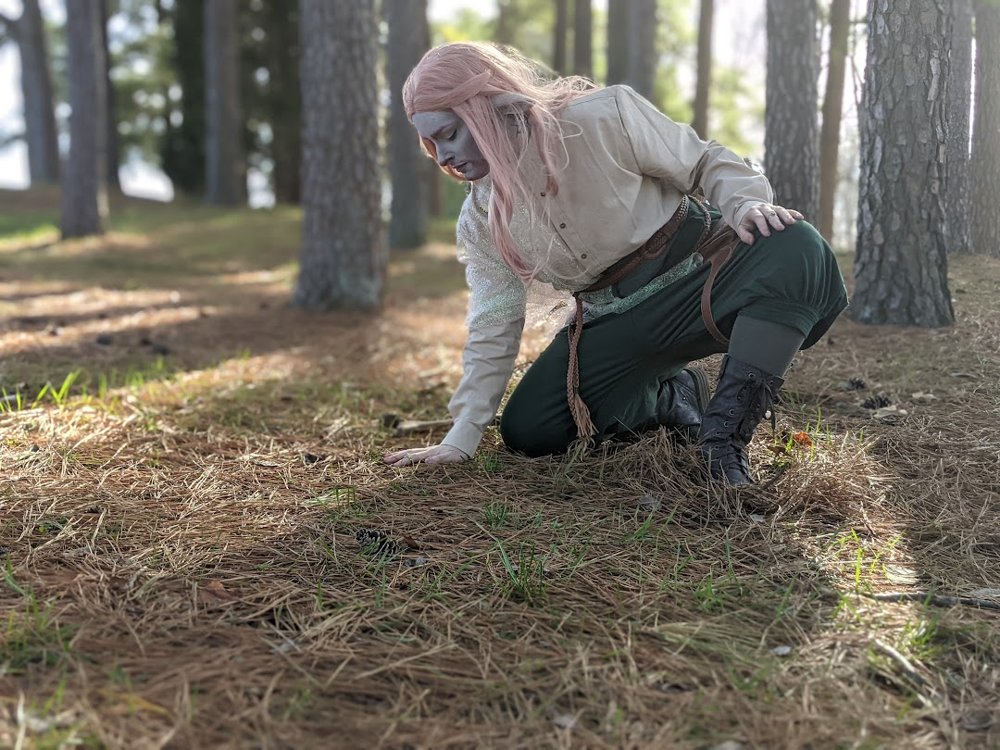
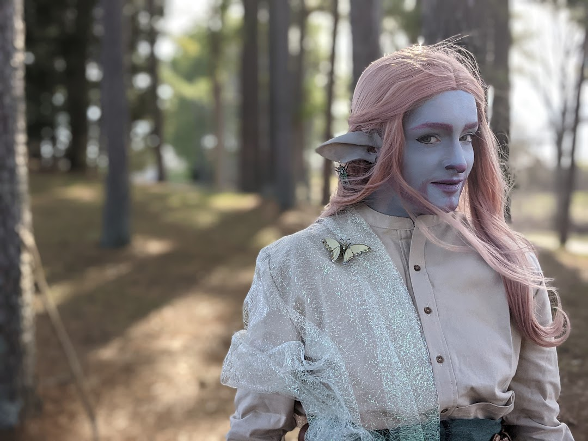
caleb widogast
Caleb was a fun test of makeup as well as enjoying what it felt like to have long hair! I returned from my deployment in 2020 with locks lovingly grown from closed barber shops and hair salons. While Caleb is what I would consider moreso a costest - cosplay test - I had a lot of fun being a moody, broody wizard.
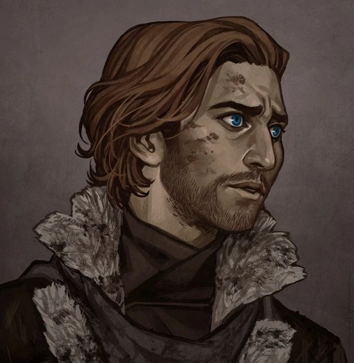
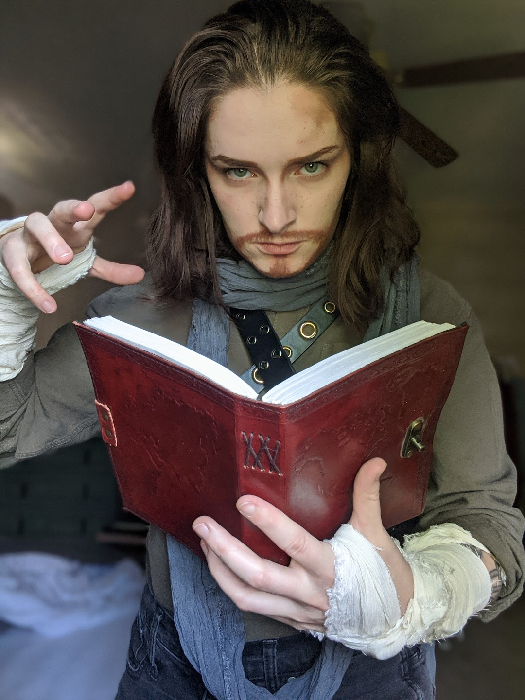
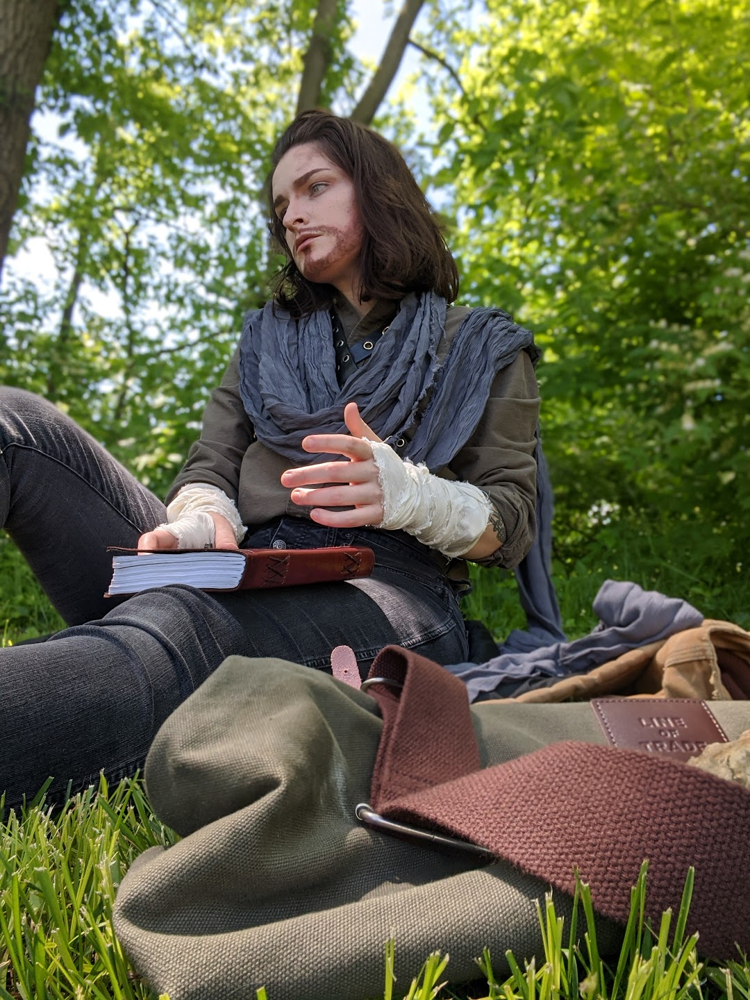
veth brenatto
In the backyard of the apartment I used to live at was a beautiful magnolia tree. In 2021, I found that I had enough shiny bits and buttony bobs to make my own interpretation of the bauble-loving halfling-turned-goblin-turned-halfling, Veth. She loves pickpocketing rings, jewels, and buttons, and using what I had, I was able to try my hand at dressing as her as the magnolia pulls the heavy weight in the background.
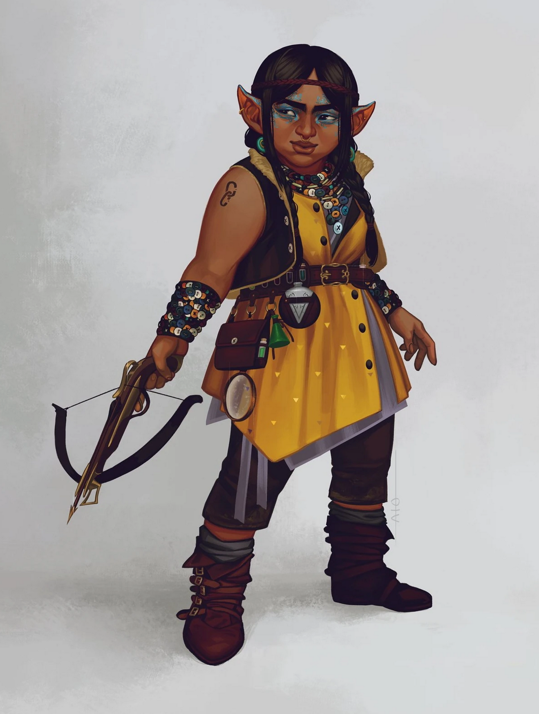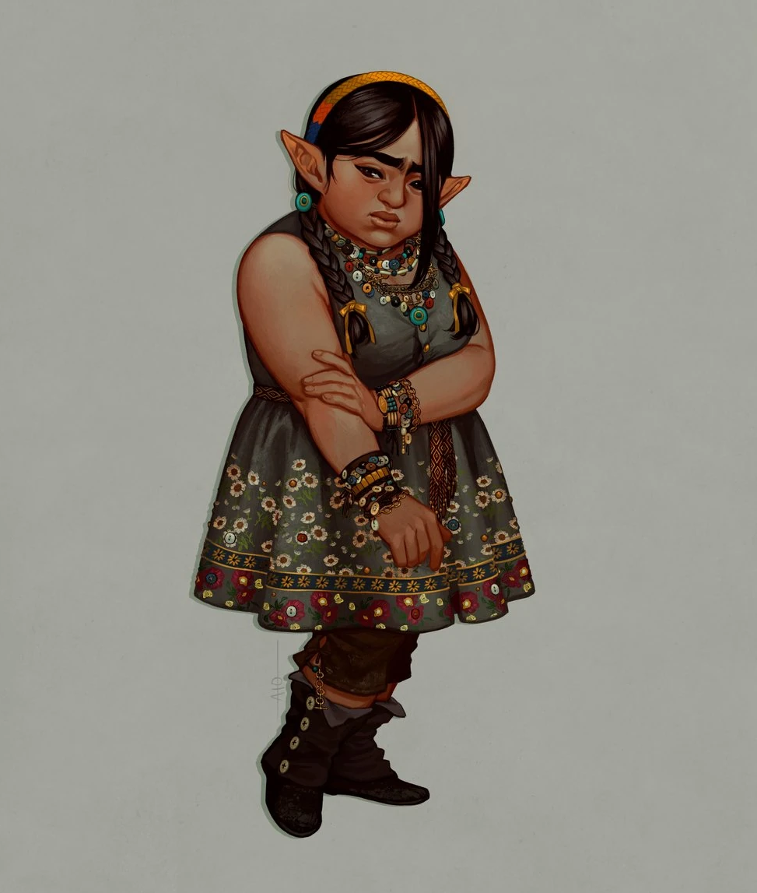
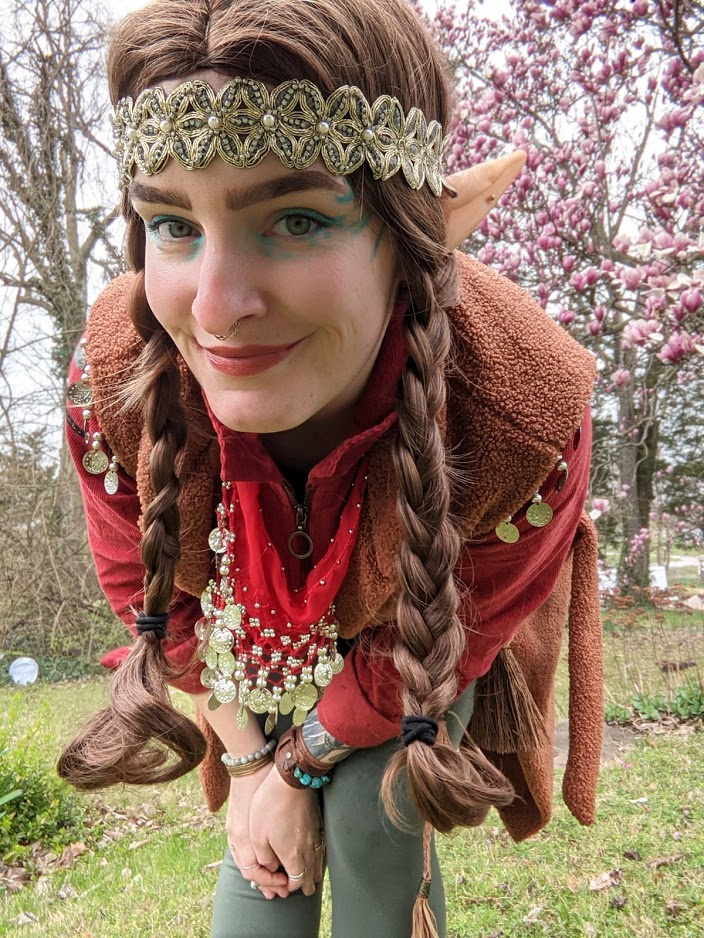
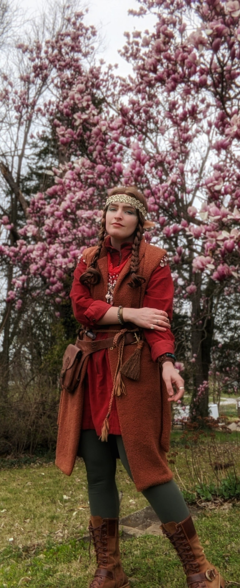
yasha nydoorin
Though the photos don't particularly reveal it, I spent more money on Yasha than on any other costume. Her wig along is a sustainably-sourced human hair lace front wig. The components of her outfit came from a handful of local retailers and handmade Etsy retailers. Yasha was a guilty pleasure, but wearing her made me feel beautiful and powerful, just like her!
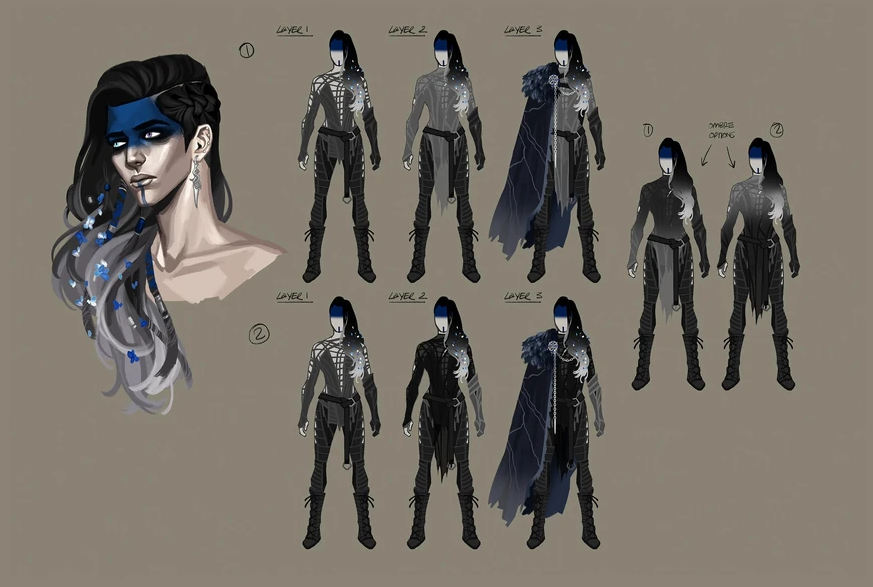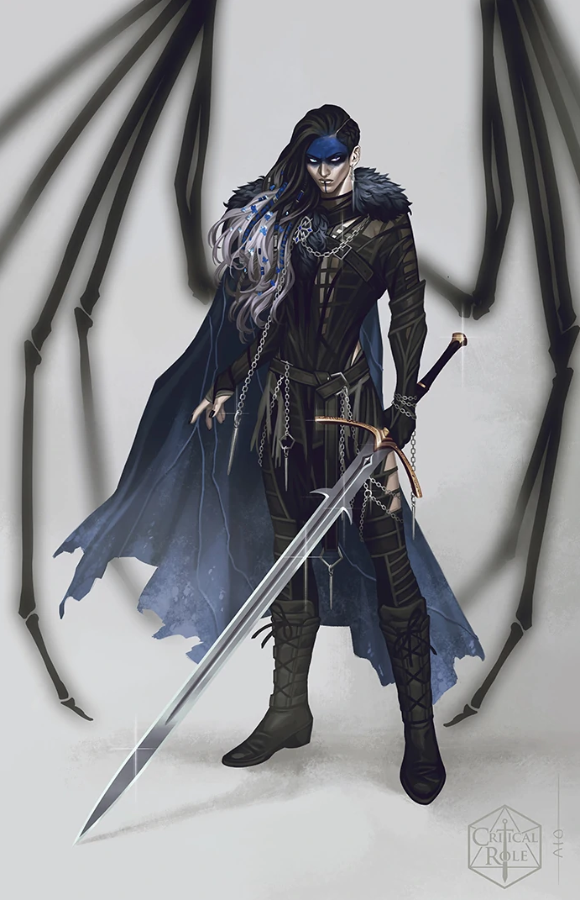
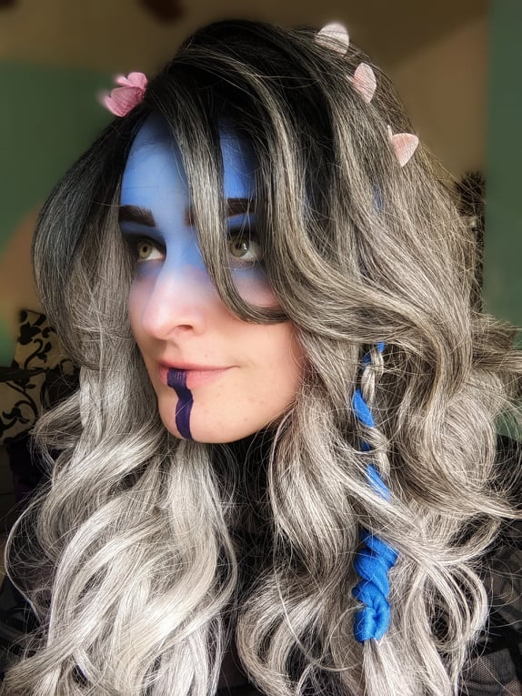
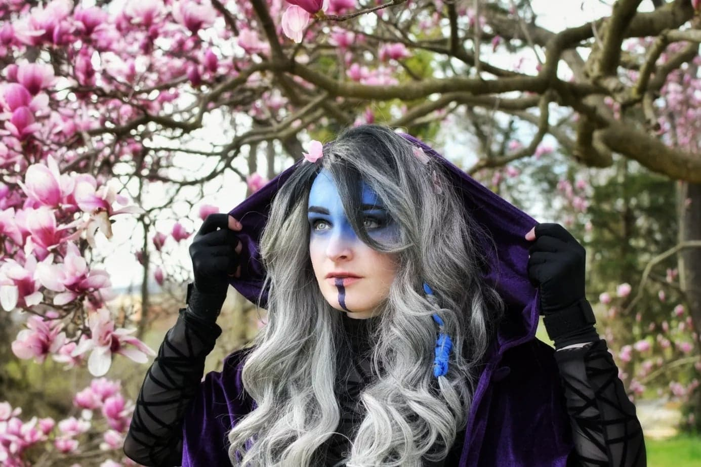